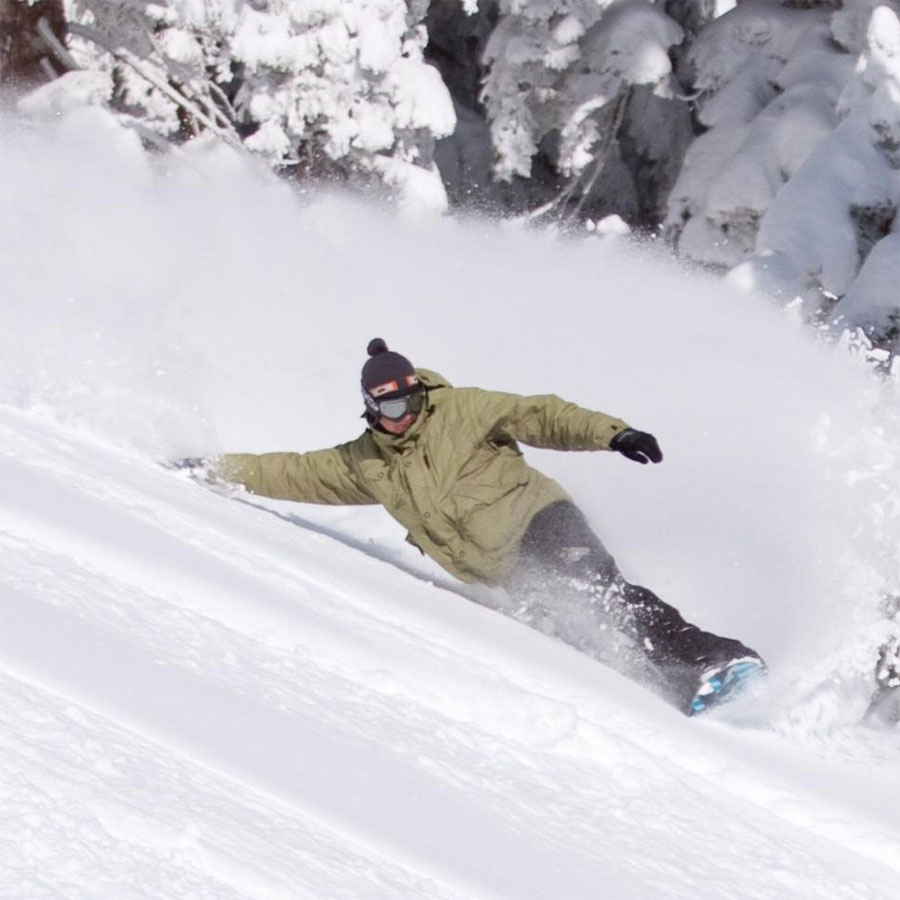
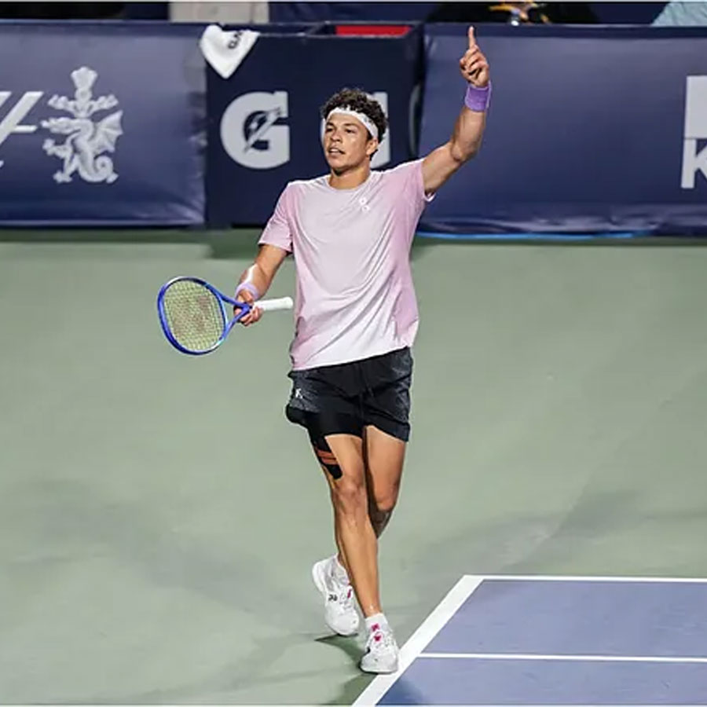
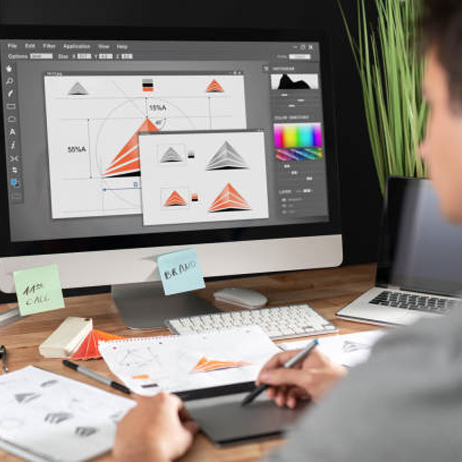

My Story...

Graphic design intrigued me at a young age because of the intricate details that go into designing a finished project. I was really inspired by YouTube artists and digital creators that made things like thumbnails and digital media that really stood out. During my life, I started to get more involved using computers and developed a passion for everything about them.
Hobbies
One of my passions outside of design is playing tennis. I have been playing at my school for over 2 years and through my experience I learned how to grow and collaborate with my team.